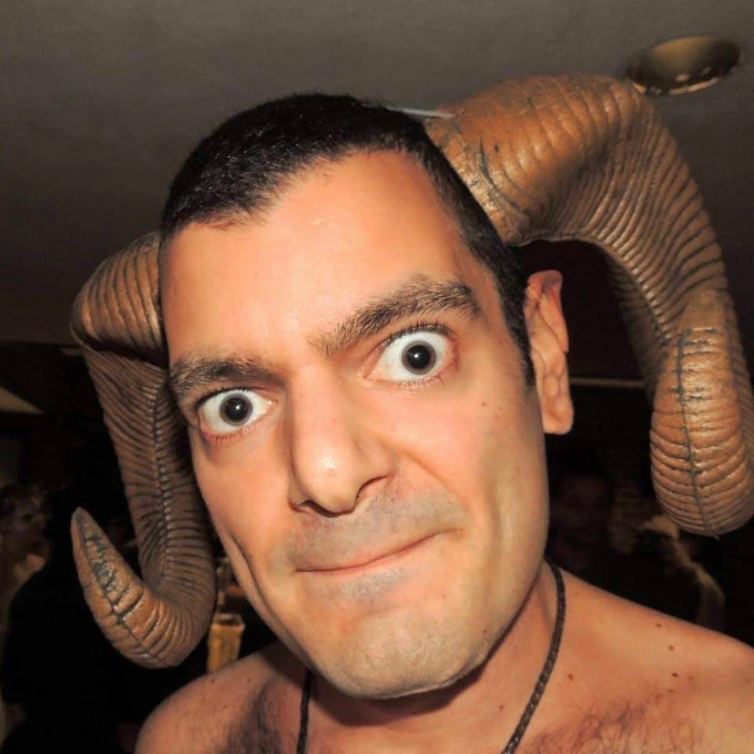

Timeline photos
This is my stalker.
I think his name is Jeremy Durant. But he sometimes goes by Jeremy Satyr.
“Satyr is a forest god believed by the ancient Greeks to have the ears and tail of a horse or goat and to enjoy rowdy pleasures.”
He constantly texts me from various numbers. He creates new Facebook profiles so he can watch me even though I block him.
I believe his girlfriend died from an overdose and that has turned him into a ball of rage against homeless people and the drug world.
I believe he is bipolar.
Of all the concerning people in my life, this guy concerns me the most.
Sinead O’Connor died yesterday. Her son killed himself years ago. She was diagnosed with bipolar. I won’t be surprised if we find out that she killed herself as well.
Yesterday I rewatched that time after she tore up the Pope’s picture on SNL where she stood in front of a Madison Square Garden audience that incessantly booed her. She just stood there and took it.
It turns out she was right. But way ahead of her time.
She was protesting the Catholic Church's coverup of child abuse in Ireland and had grown enraged.
She destroyed her career for her beliefs.
I WILL NOT BE INTIMIDATED BY BULLIES.
I am right about the way we treat homeless people being a crime against humanity. We abandoned our poor and sick and mentally ill to freeze to death in the winter and of heat exhaustion in the summer.
I. Am. RIGHT!
I love you Sinead O’Connor. Your bravery makes me more brave.
I will not stop fighting. Ever.